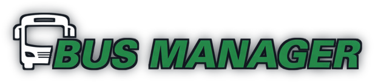
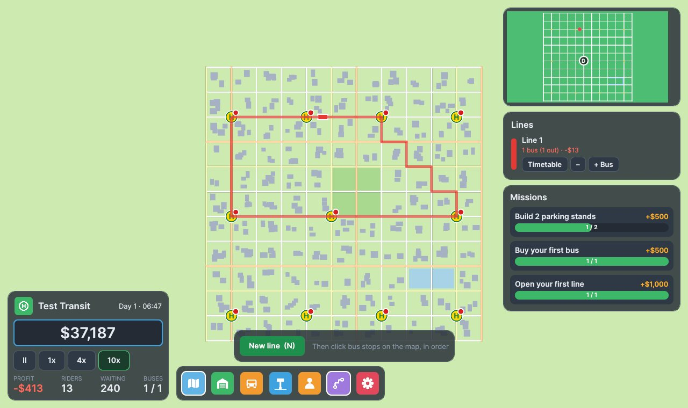
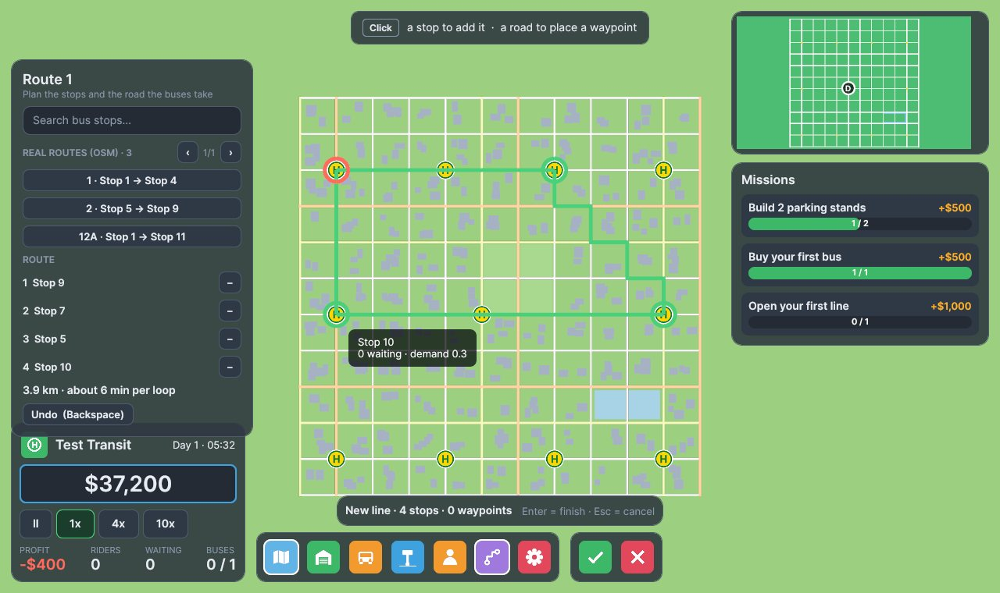
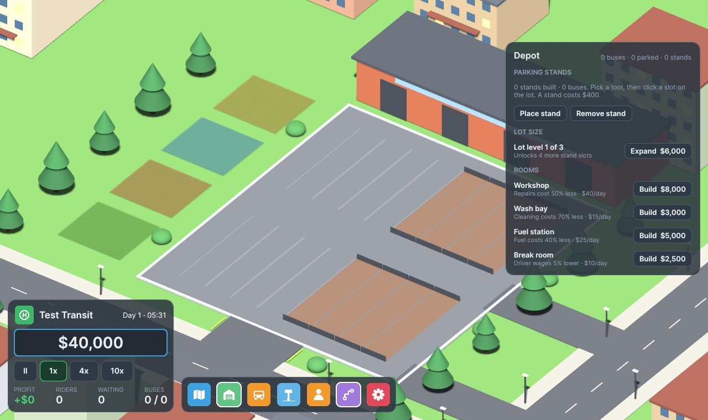
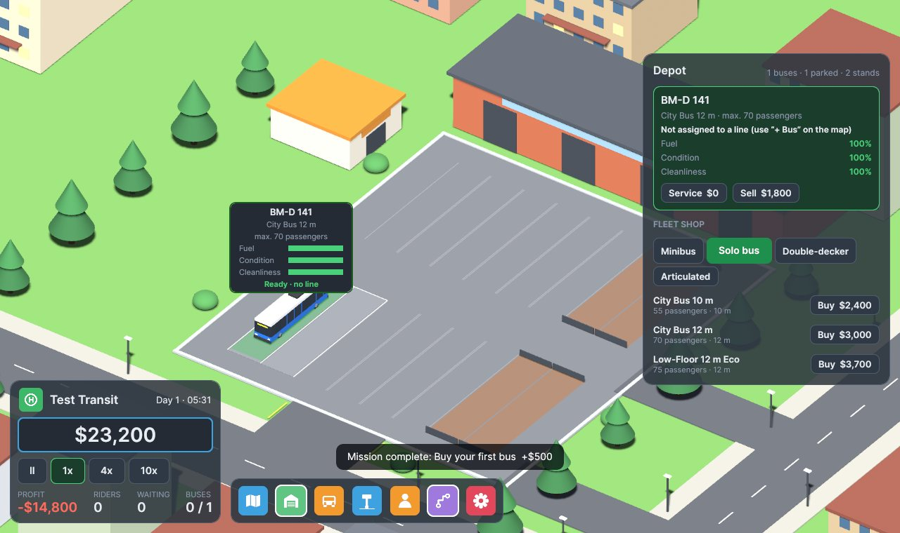

Download any city from OpenStreetMap, build a depot, buy buses, plan lines on real roads and keep your drivers and timetables in order. Free and open source.
Early developmentA management game in the spirit of classic bus tycoons, with a real map under it.
Search any place on Earth. Roads, parks, water and buildings come from OpenStreetMap, downloaded inside the game. Update a city to the latest map data at any time.
Click stops and waypoints on the map, or start from real OSM bus routes. Buses follow the real road network.
Start with an empty lot. Place parking stands, expand the land and build a workshop, wash bay, fuel station and break room.
Riders pick where they want to go. Busy, nearby stops attract more of them and they only board buses that take them there.
Hire drivers for early, late and night shifts, set timetables and keep your fleet serviced and fuelled.
Minibuses, solo buses, double-deckers and articulated buses, each with their own models. Players can add their own buses.
Work in progress builds from the game.

A clean OSM-style map with German H bus stops, a minimap, missions and live line statistics.

Pick stops in order, drop waypoints on roads and see the length and loop time before you open the line.

Buy and place parking stands, expand the lot step by step and add rooms that make running costs cheaper.

Choose a category, compare capacity and price and park your new bus on a stand you built yourself.
The installer can install, update, repair and uninstall the game. Once installed, the game also updates itself from its own menu.
Want to build it yourself? cargo run --release -p busmanager. See the README.
What is done and what is coming.
Report bugs, share ideas, follow development and support the project.